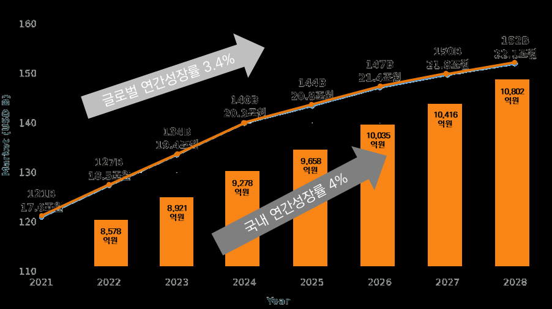
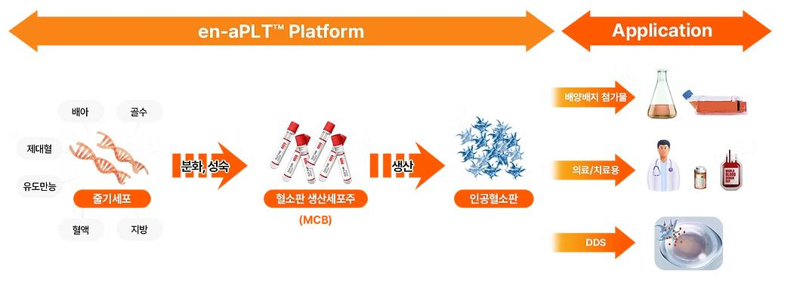
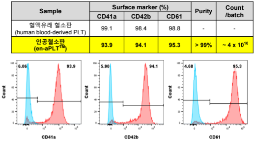
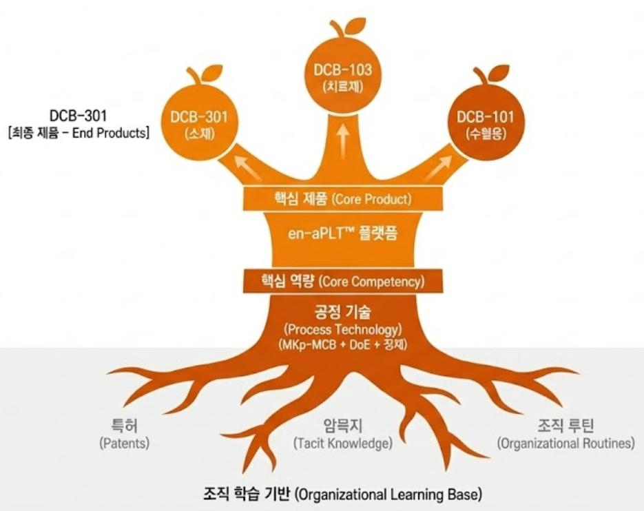

헌혈 인구가 급감하며 글로벌 혈액 공급 위기가 심화되는 가운데, 5~7일의 짧은 유통기한을 가진 혈소판은 인공 제조 기술 개발의 시급성이 가장 높은 분야다. 2021년 설립된 국내 바이오 벤처 ㈜듀셀(DewCell)은 후발주자임에도 창업 4년 만에 경쟁사 대비 2.7배 높은 생산 수율을 달성하고 세계 최초로 50L 규모 인공혈소판 배양에 도전하고 있다. 본 연구는 듀셀이 선도적 위치를 확보한 요인을 핵심역량·동적역량·삼중나선 모델의 세 이론적 틀로 분석한다.
- 기존 헌혈 기반 시스템의 한계와 글로벌 혈액 공급 위기가 심화되며 인공혈액 기술이 차세대 혈액 대체 솔루션으로 주목받고 있으며, 특히 혈소판은 짧은 유통기한과 만성적 공급 부족으로 인공 제조 기술 개발의 시급성이 높다.
- 2021년 설립된 국내 바이오 벤처 듀셀이 후발주자임에도 단기간에 인공혈소판 분야의 선도적 위치를 확보한 요인을 기술경영 관점에서 분석하였다.
- 인공혈소판 산업의 시장·기술 특성을 고찰하고, 듀셀의 성장 요인을 핵심역량·동적역량·삼중나선 모델의 이론적 틀을 적용하여 분석하였다.
- 듀셀은 산업의 병목을 해결하고 새로운 경로를 창출하는 탈추격(Post Catch-up) 성장을 달성한 것으로 나타났다.
- 이는 바이오 딥테크 후발주자가 한계를 극복할 수 있는 유효한 전략적 방향을 제시한다.
제1장. 서론
1.1 연구배경
국내의 경우 2024년 기준 하루 혈액 필요량 5,482유닛 대비 실제 공급량은 5,407유닛(91.4%)에 그쳐 1일분 미만의 재고만 유지하고 있다. 특히 혈소판 제제는 적혈구 제제의 5일분 재고 대비 단 1.8일분만 보유해 상시적으로 주의·경계 단계에 놓여 있다. 근본 원인은 헌혈 인구의 급감으로, 10대 헌혈자는 2015년 약 150만 명에서 2024년 약 78만 명으로 47.5% 급감했다. 부족한 혈소판 확보를 위해 지정헌혈이 2018~2021년 7.3배 급증했고, 팩당 200만 원 상당의 불법 매혈 시장까지 형성됐다. 이에 대응해 유도만능줄기세포(iPSC)를 거핵세포로 분화시켜 혈소판을 대량 생산하는 인공혈소판 기술이 차세대 대안으로 부상하고 있다.

1.2 연구주제 및 Research Question
인공혈소판 산업은 여전히 경제성 있는 대량생산(Scale-up)이라는 결정적 난제에 직면해 있다. 글로벌 선발주자인 일본 메가카리온(Megakaryon)은 2011년 설립되어 약 1,000억 원 이상을 투자받고 2019년 세계 최초로 인공혈소판 임상 1상에 진입했으나, 특수 배양기 중심 공정이 스케일업 단계에서 효율 저하로 상업화 난관에 봉착해 공정 재설계에 돌입했다. 이는 인공혈소판 개발의 현시점 병목이 기초 과학 지식이 아니라 공정 과정(Process)의 혁신과 사업 모델의 설계임을 보여준다. 반면 듀셀은 생산 수율은 2.7배, 공정 기간은 1/3로 단축하고, 단일 플랫폼 기술을 3개 시장으로 다각화하여 2026년부터 조기 수익화를 목표로 하고 있어 독특한 사례(Unusual Case)로 볼 수 있다.
제2장. 이론적 배경
2.1 인공혈소판 산업 분석
인공혈소판 생산 공정은 iPSC를 거핵세포로 분화시키는 Upstream, 바이오리액터에서 대량 배양해 혈소판을 방출시키는 Midstream, 배양액에서 혈소판을 분리·정제·품질관리하는 Downstream의 세 단계로 구성된다. 핵심 난제는 경제성 있는 대량생산으로, 배양기가 커질수록 내부 환경의 균일성 유지가 어렵고 과도한 교반은 거핵세포에 물리적 손상을 주며, 사이토카인은 그램당 수백만 원에 달해 원가의 상당 부분을 차지한다. 또한 일부 선발주자들이 채택한 발암 관련 유전자 주입 불멸화(immortalization) 전략은 장기 안전성 검증 부담을 가중시키므로, 유전자 조작을 최소화하는 Non-engineered 접근법이 규제 승인에 유리하다. 가치사슬 관점에서 핵심 부가가치는 생산(Manufacturing) 단계에 집중되며, 기업의 핵심 경쟁력은 공정 기술(Process Technology)에 있다.

2.2 혁신이론 프레임워크
연구는 세 이론을 분석 렌즈로 삼는다. Core Competency(Prahalad & Hamel, 1990)는 고객 가치·경쟁사 차별화·확장 가능성의 세 조건을 갖춘 조직의 집합적 학습이다. Dynamic Capabilities(Teece et al., 1997)는 급변하는 환경에 대응해 내외부 역량을 통합·구축·재구성하는 능력으로, Sensing–Seizing–Transforming의 3단계로 작동한다. Triple Helix(Etzkowitz & Leydesdorff, 1995, 2000)는 혁신이 대학·산업·정부의 상호작용을 통해 창출된다고 보며, 바이오·헬스케어처럼 산·학·연·병·정의 긴밀한 협력이 필수적인 분야에서 특히 중요하다.
제3장. 연구 흐름
본 연구는 인공혈소판 산업의 후발주자 듀셀이 어떻게 선발주자를 추월해 선도적 위치를 형성했는지를 규명하는 단일 사례 연구(Single Case Study)다. Yin(2014)이 단일 사례 연구의 적합 조건으로 제시한 극단적·독특한 사례와 계시적 사례를 듀셀이 모두 충족한다고 보았다. 분석 프레임워크는 세 이론적 렌즈를 통합 적용한다. 핵심역량(Core Competency)은 독자적 생산 플랫폼을 통한 기술적 우위를, 동적역량(Dynamic Capabilities)은 단일 플랫폼을 다각화된 사업 포트폴리오로 전환한 과정을, 삼중나선(Triple Helix)은 산·학·연·병·정 협력을 통한 생태계 구축을 설명한다.
연구 자료는 IR 자료·정부 과제 공고·식약처 고시·특허·언론 보도 등 2차 자료를 중심으로 수집해 삼각검증(Triangulation)했고, 패턴 매칭과 설명 구축 기법으로 분석했다. 구성·내적·외적 타당성과 신뢰성의 네 기준을 통해 분석의 타당성을 확보했다.
제4장. 듀셀 사례 분석
4.1 기업 개요 및 연혁
㈜듀셀은 2021년 10월 설립된 국내 최초이자 유일한 인공혈소판 기반 바이오 벤처기업으로, 2025년 11월 기준 임직원 24명이다. R&D 중심 연구자가 아닌 상업화·품질관리 경험이 풍부한 산업 전문가들이 주축이 되어 창업했다는 점에서 일반적인 바이오 스타트업과 차별화된다. 2022년 3월 TIPS 선정을 시작으로 누적 약 100억 원 이상의 정부 R&D 자금을 확보했으며, 특히 2023년 7월 '세포기반 인공혈액 제조 및 실증 플랫폼 개발사업'(2023~2029년, 총 425억 원)의 총괄 책임기관이 되어 부산대·삼성서울병원·GC Cell 등 20여 개 기관을 아우르는 컨소시엄의 허브(Hub) 역할을 맡았다.
4.2 Core Competency: 공정 기술의 내재화
듀셀의 사업은 en-aPLT™(engineered artificial Platelet) 플랫폼에 기반하며, 세 가지 전략적 혁신으로 구성된다. 첫째, MKp-MCB(거핵전구세포 마스터셀뱅크) 전략이다. 매번 iPSC부터 분화를 시작하던 기존 방식과 달리, iPSC를 거핵전구세포까지 분화시켜 냉동 보관한 뒤 필요할 때 해동해 생산하므로 전체 공정 기간이 26일에서 9일로 단축된다. 이는 생산 회전율을 2.9배 높이고 제조원가를 40~50% 절감한다. 둘째, 유전자 조작을 최소화하는 Non-engineered 안전성 전략으로, 2025년 8월 식약처가 세포기반 인공혈액을 첨단바이오의약품으로 분류하며 조건부 허가 제도 적용이라는 규제 패스트트랙을 확보했다. 셋째, 글로벌 표준인 범용 바이오리액터(Sartorius Biostat STR)를 활용하되 DoE(Design of Experiments) 기법으로 공정 변수를 체계적으로 최적화했다. 초기 40% 수준이던 바이오마커 CD42b 발현율을 90% 이상으로 끌어올린 것이 핵심 성과다.
이 공정 혁신은 정량적 성과로 이어졌다. 3L 바이오리액터에서 리터당 2×10¹⁰개의 생산 수율을 달성해 경쟁사 대비 약 2.7배 높은 수준을 기록했고, 공정 시간은 약 2.9배 빠르다. 듀셀은 GMP 수준 생산 시설 인수를 통해 세계 최초로 50L 규모(3L의 약 17배) 인공혈소판 배양에 도전하고 있다.

듀셀의 공정 기술은 Prahalad와 Hamel의 핵심역량 세 조건을 모두 충족한다. 9일 공정과 2.7배 수율은 최종 제품 가격을 40~50% 낮춰 고객 가치를 제공하고(고객 가치), MKp-MCB·DoE 최적화·2-Step 정제가 유기적으로 결합된 통합 시스템은 개별 요소가 특허·논문으로 공개되어 있어도 이를 통합·조율하는 노하우가 조직 내 암묵지(Tacit Knowledge)로 축적되어 모방이 어렵다(경쟁사 차별화). 그리고 동일한 공정 기술로 생산된 인공혈소판이 세 시장으로 확장된다(확장 가능성). 듀셀의 핵심역량은 제품이 아니라 과정(Process)에 있으며, 범용 바이오리액터를 사용해 특정 장비에 고착되지 않으므로 Leonard-Barton이 경고한 핵심경직성(Core Rigidity)의 함정도 회피한다.

4.3 Dynamic Capabilities: 플랫폼 레버리지 전략
듀셀은 en-aPLT™ 플랫폼을 기반으로 단기·중기·장기 수익원을 동시에 확보하는 3-Track 포트폴리오를 구축해 바이오 스타트업의 전형적 문제인 Death Valley를 극복한다. Track 1인 DCB-301(배지첨가물용 i-ahPLys™)은 인공혈소판을 파쇄해 성장인자를 추출한 용해물로, 임상시험이 필요 없는 연구용 시약(RUO) 등급이라 즉시 판매가 가능한 조기 수익화 모델이다. Track 2인 DCB-103(골관절염 치료제 i-aPLP™)은 PRP의 품질 불균일성 문제를 해결하는 표준화 제품으로, 골관절염 동물 모델에서 고농도 투여군의 Mankin Score(연골 손상 정도)를 8에서 4로 절반 개선했고 2025년 4월 세계 최대 골관절염 학회 OARSI에서 발표했다. Track 3인 DCB-101(수혈용)은 헌혈 유래 혈소판을 완전 대체하는 장기 목표 제품이다.
이 3-Track 전략은 Teece의 Sensing(3개 시장 기회 동시 포착)–Seizing(정부 R&D를 각 Track에 전략적으로 배분)–Transforming(3-Track이 상호 강화하는 실물옵션 효과)을 구현한다. 세 Track은 시장 진입 시기(2026/2028/2033), 규제 장벽(없음/중간/높음), 시장 규모(작음/중간/큼)가 모두 달라 상관관계가 낮은 포트폴리오를 구성하며, 이는 Markowitz의 현대 포트폴리오 이론의 실천이다. 한 투자 업계 관계자는 2023년 투자 당시 "듀셀의 3-Track 전략은 바이오 스타트업의 전형적 리스크인 'All-or-Nothing'을 회피한 현명한 선택"이라고 평가했다.
4.4 Triple Helix: 인공혈액 생태계 구축
듀셀이 추진한 전략의 핵심은 규제를 따르는 Rule Taker가 아니라 식약처와 함께 규제를 설계하는 Rule Maker가 된 것이다. 인공혈소판은 세계 최초 제품이라 기존 가이드라인이 없었기에, 듀셀은 인공혈액사업단 주관기관으로서 식약처 담당자들과 정기 회의를 통해 품질 기준·안전성 시험 설계·임상시험 설계를 함께 논의했고, 그 결실로 2025년 8월 세포기반 인공혈액의 첨단바이오의약품 분류가 이뤄졌다. 대학·연구소와는 지식 공동 창출 구조를 형성해 부산대와 iPSC 원천기술 이전을, 한국생명공학연구원(KRIBB)과 바이오리액터 스케일업을 공동 연구했다. 산업에서는 수직 통합이 아닌 수평 협력을 지향해 글로벌 바이오리액터 1위 Sartorius, 유럽 HPL 1위 PL BioScience(200만 달러 규모 제휴)와 협력했으며, 병원에서는 삼성서울병원과 임상 네트워크를 구축했다.
이론적으로 듀셀의 사례는 세 주체가 전략적으로 협력하며 기업이 중심(Hub) 역할을 하는 Triple Helix III(균형형·산업 주도형)에 해당한다. DiMaggio의 제도적 기업가정신(Institutional Entrepreneurship) 관점에서 듀셀은 규칙 자체를 설계하는 참여자가 되어 규제 선점 효과(Regulatory First-Mover Advantage)를 창출했고, 산업 파트너십은 Teece의 Profiting from Innovation 이론에서 바이오리액터(일반적 보완 자산)는 외부 활용(Ally)하고 공정 최적화 노하우(전문적 보완 자산)는 내부화하는 전략적 판단을 보여준다. 그 결과 듀셀은 인공혈액 생태계에서 최고 수준의 네트워크 중심성(Centrality)을 확보하며 생태계의 설계자(Ecosystem Architect)가 됐다.
제5장. 결론 및 시사점
듀셀의 성공은 단순한 모방을 넘어선 탈추격(Post Catch-up)의 과정이었으며, 기술적 우위(공정 혁신)·전략적 유연성(포트폴리오 다각화)·구조적 우위(생태계 주도)가 상호 강화하며 시너지를 창출한 결과다. 듀셀은 선발주자의 실패(특수 장비 의존→스케일업 실패, 단일 제품→Death Valley)를 체계적으로 학습하되 답습하지 않고, 범용 장비 기반의 공정 내재화와 3-Track 포트폴리오라는 새로운 경로를 창출해 경쟁사 대비 1/3의 자본으로 동등 이상의 성과를 달성했다.
- 경로 창출(Path Creation): 기술 모방이 아니라 산업의 핵심 병목(스케일업·원가·규제)을 해결하는 독자적 대안 경로를 탐색해 기술적 초격차를 확보해야 한다.
- 플랫폼 사고의 포트폴리오: 단일 제품이 아니라 핵심 기술의 부산물·중간 산출물도 제품화하여 최종 목표 달성 전에도 현금흐름이 발생하는 구조를 만들어야 하며, 조기 수익화 가능한 Track(임상 불필요)을 반드시 포함해 Death Valley를 극복해야 한다.
- 제도적 기업가로서 Rule Maker 지위: 정부 R&D 과제 주관기관 참여로 규제 기관과 직접 협의하고, 산·학·연·병·정 네트워크의 허브가 되어 산업 구조 자체를 자신에게 유리하게 설계해야 한다.
- 삼위일체 전략: 듀셀의 성장 공식은 '산업의 핵심 병목 돌파 × 시장 다각화 × 생태계 규칙 제정자 지위 선점'의 조합이며, 기술혁신·사업혁신·생태계 혁신 중 하나에만 집중하는 것이 아니라 동시에 추진해야 한다. 이는 후발주자 추월에 속도(Speed)보다 방향(Direction)의 재설정이 중요함을 시사한다.